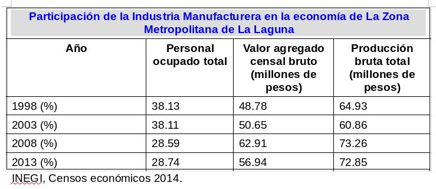

La Industria de la Manufactura es un sector económico importante en la región de La Laguna, según datos del censo económico 2014 realizado por el INEGI; esta genera 99 225 empleos, 159 781.16 millones de pesos en producción bruta y 41 224.94 millones en valor agregado; estas cifras representan respectivamente, el 30.12%, 71.87%, y 56.18% del total de las actividades económicas de la región.
Primero, es importante señalar que la región de La Laguna está compuesta por 20 municipios. Del estado de Coahuila: Francisco I. Madero; Matamoros; Parras; San Pedro; Torreón; y Viesca. Del estado de Durango: Cuencamé; General Simón Bolívar; Gómez Palacio; Hidalgo; Indé; Lerdo; Mapimí; Nazas; Rodeo; San Luis de Guadalupe; San Luis de Cordero; San Pedro del Gallo; Santa Clara y Tlahualilo. Mientras tanto la Zona Metropolitana de La Laguna (ZML) está compuesta por: Matamoros, Torreón, Gómez Palacio y Lerdo.
Continuando, a nivel nacional, para la Industria Manufacturera, La Laguna aporta el 1.96% del empleo, el 2.37% de la producción bruta y el 2.37% del valor agregado. Para el caso de la ZML, esta representa el 1.63% de los empleos en el sector, el 2.28% de la producción bruta y el 2.26% del valor agregado. Específicamente para el municipio de Torreón, este aporta el 0.92%, el 1.69% y el 1.68% respectivamente.
A nivel de la ZML, como la delimitación más representativa de la región; el sector de la Industria Manufacturera es el más importante de las actividades económicas, en producción bruta y valor agregado; ya que representa el 72.85% y el 56.94%, de los sectores económicos en la ZML. En cuanto a empleo, aporta el 28.74%.
Si analizamos estos mismos datos, solamente para la ciudad de Torreón, encontramos que el peso de la Industria Manufacturera en el empleo es de 25.15%, en la producción bruta de 74.96% y en el valor agregado de 58.64%.

Profundizando en la producción bruta para municipios que conforman la ZML; el 73.94 % de la misma está Torreón, seguido de Gómez Palacio con 23.82%, Lerdo con 1.33% y Matamoros con 0.91%.
Otra manera de analizar la importancia de la Industria Manufacturera y su productividad en la ZML, es determinando las actividades más significativas dentro del sector manufacturero. Para ello se estudiaron los 19 subsectores que conforman dicha Industria Manufacturera, resaltando 5: Metálicas Básicas (IMB); Fabricación de Maquinaria y Equipo (FMI); Industria Alimentaria (IA); Fabricación de Equipo de Transporte (FET) y Fabricación de Prendas de Vestir (FPV); de acuerdo al Sistema de Clasificación Industrial de América del Norte, SCIAN. La importancia de estos subsectores recae, en que en su conjunto representan el 83% de la producción bruta de la industria manufacturera, el 81% del valor agregado y el 68% de los empleos.
En cuanto a la productividad, si comparamos el dato con los promedios nacionales por subsector, los resultados arrojan que 4 de los 5 subsectores que resaltamos en este artículo, superan los resultados nacionales: la IMB en 165.45%, la FMI en 164.64%, la IA en 31.51%, la FPV en 6.67%. Excepto por la FET que se encuentra por debajo del dato nacional 67%.
Existen otras aristas desde las cuales se concluye que la Industria Manufacturera es una de las actividades con mayor relevancia en La Laguna, no solo como región sino como municipio. Por ello, es importante mantener el desarrollo de dicha industria para aprovechar sus posibilidades y beneficios.